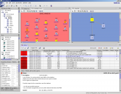

Nokia Chooses The NetBeans Platform
Nokia offers a complete solution for managing mobile networks and end-user services, called Nokia NetAct™, ranging from control-room software for 24/7/365 monitoring of the network to software for graphical optimization. Nokia NetAct™ has been delivered to more than 300 customers around the world.
Managing a mobile network is a complex subject matter where end users require the help of a diverse range of graphical tools. The integration and seamless cooperation of these tools is a must. With the introduction of the NetBeans Platform as base for its tool development, Nokia hopes to boost the network operator's efficiency in carrying out network management tasks just in the same way as integrated development environments (IDEs) boost software development productivity.

Before choosing NetBeans as a platform for user interface development, Nokia evaluated other available non-commercial and commercial platforms and the possibility of developing a platform in-house. To name a few, the following properties made NetBeans attractive:
- Plug-and-play concept. Using the NetBeans module system and configuration layering, tools can be developed independently and "plugged" together, allowing for the large-scale interface development needed in the NetAct™ environment.
- Windowing system. The NetBeans windowing system allows users to conveniently and flexibly arrange graphical tools on the screen. Network operators have differing work processes and combine tools in different manners so flexibility is a key criterion.
- Active development. The NetBeans Platform is being actively developed. It was very easy for Nokia to find competent help in using and adapting the NetBeans Platform to meet the needs for its commercial platform.
- Swing compatibility. With a large code base of existing Swing-based user interfaces in NetAct™, good compatibility with Swing is a must.
But there were also more requirements that differ from the "normal" usage of NetBeans Platform as base for integrated development environments:
- J2EE client. NetAct™ features a secure, J2EE-based three-tier architecture. All graphical tools rely on backend services, which implement the needed business logic. These services are subject to connection management, authentication and authorization. Also the availability of tools depends on user permissions. Nokia needed a mechanism to connect to the application server at startup, authenticate the user, and make only those modules and services available that the user permitted to see.
- Zero administration. Client computers running the user interface may not require regular maintenance, so the software has to be installable in one click and it must keep itself up-to-date. The update model is different from the NetBeans IDE: In the IDE, the users decide on their own, when to download and update using the AutoUpdate Center. In J2EE environments, updates have to be pushed to the end users to maintain compatibility between the client/server interfaces. Nokia implemented a full-featured JavaWebStart integration with the NetBeans Platform. In addition, configuration data (the "SystemFileSystem") is not stored locally as files on the client but centrally in a database system. Log entries are also centrally stored using the Java Logging API.
- Branding. The existing branding features in the NetBeans Platform are very helpful to change the look of NetBeans. However, Nokia's networking products all feature a very distinct look-and-feel, which is not easily imposed on the existing platform.
The above lists are not exhaustive but highlight some important items. So far, the NetBeans Platform has proven to be very useful in the context of network management user interfaces. An early version of the NetBeans-based network management user interfaces was demonstrated at JavaOne 2004 in session TS-1694 (Desktop Application Architecture I: Using the NetBeans™ Platform Application Framework to Create a Rich Client Application).
{kind=link}